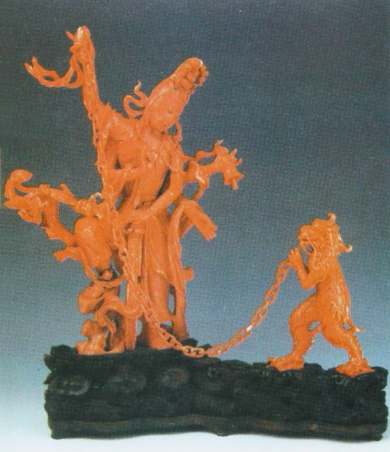
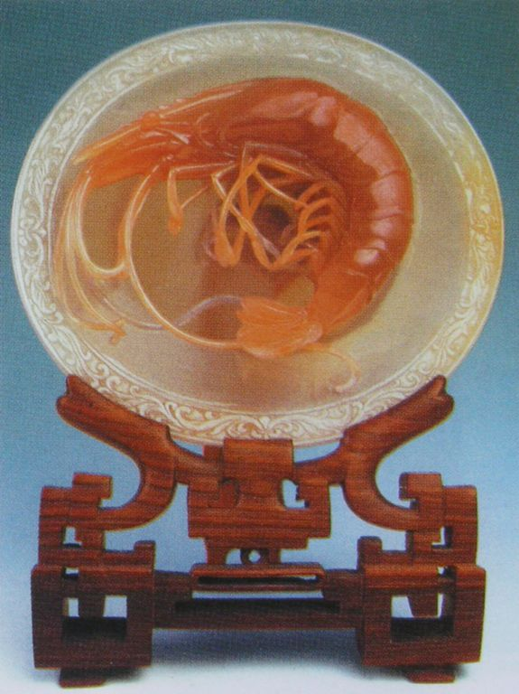
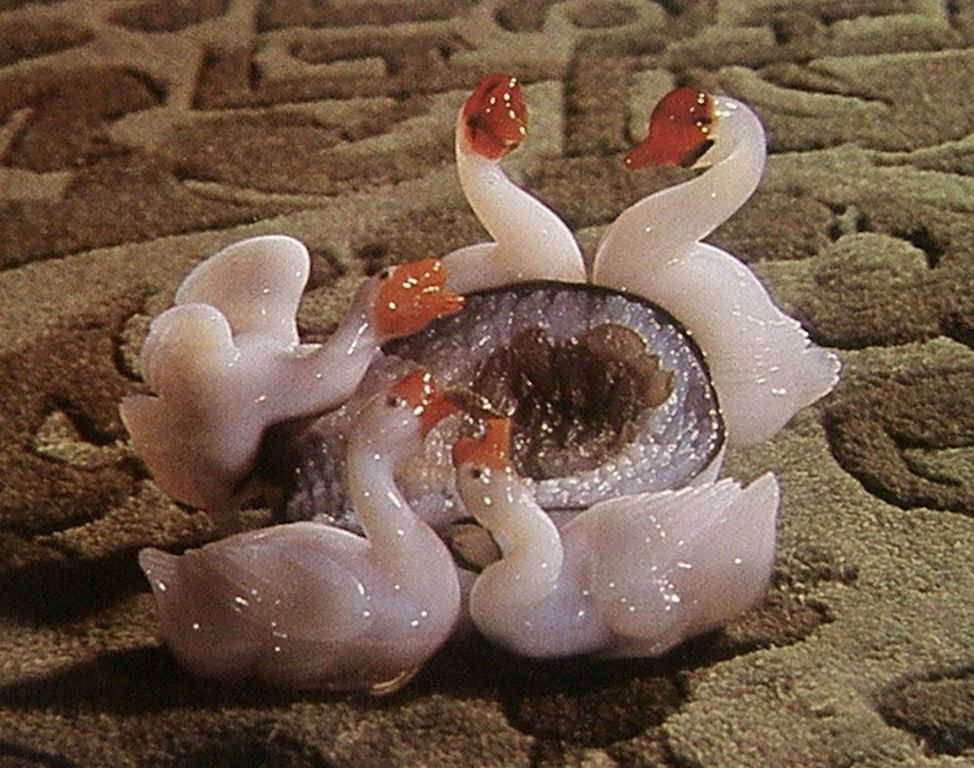
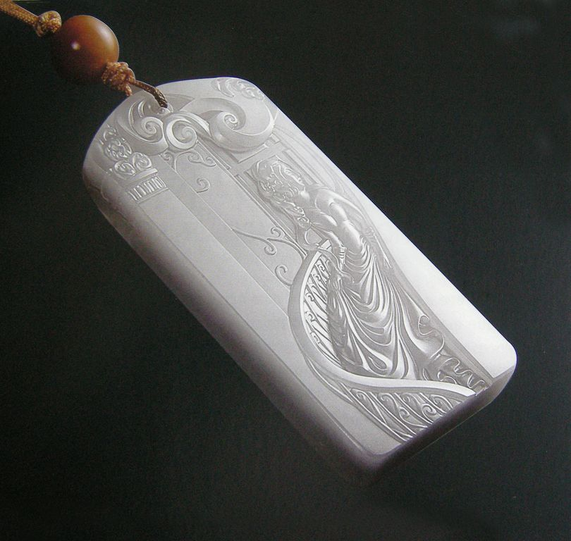
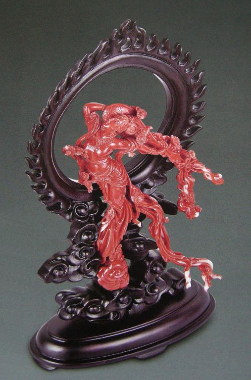
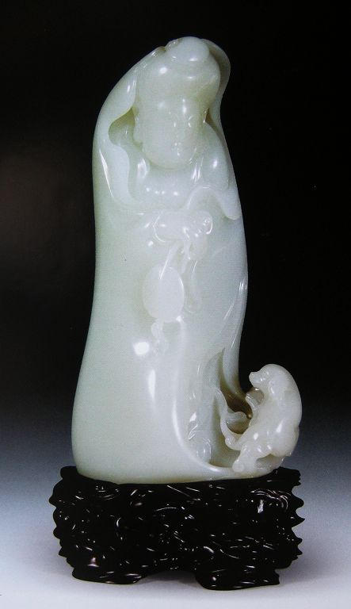
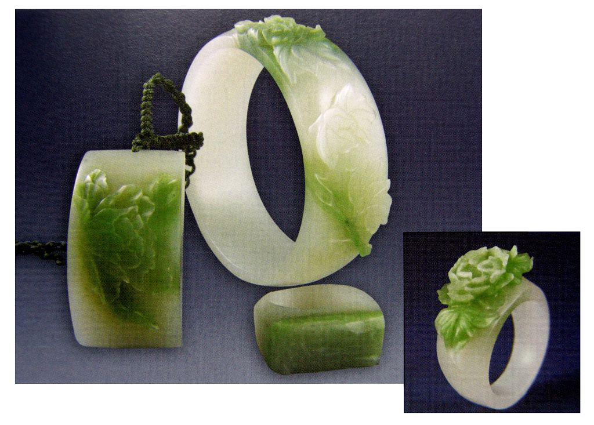
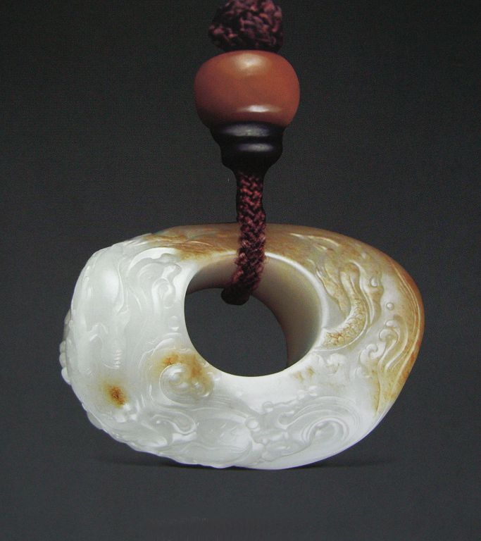
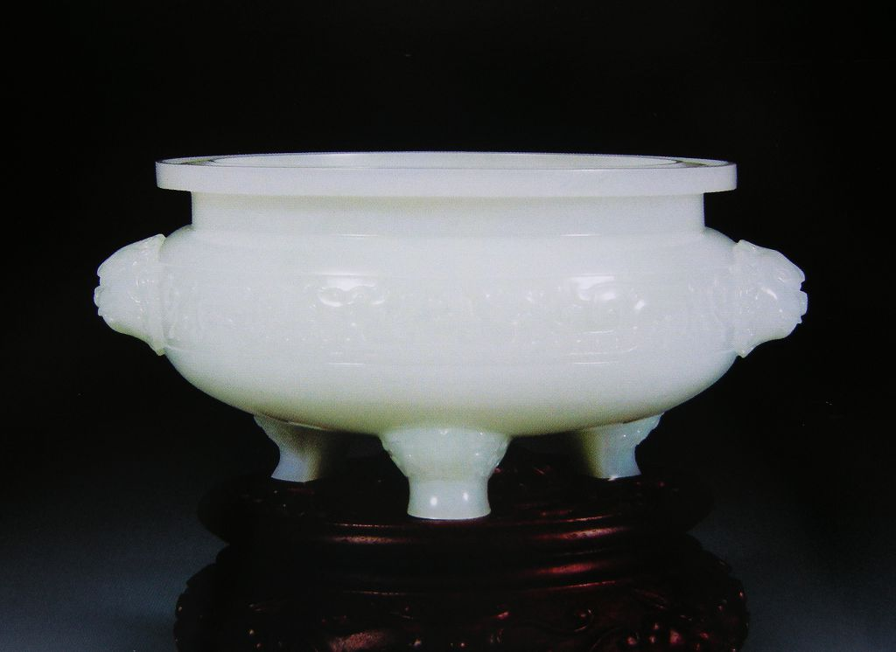

琢玉之风随时代——大师名家玉作赏析
历代玉器记刻着时代的变迁。然而，现代玉器同样以她特有的形式美感透射出时代的气息，我们通过欣赏大师、名家优秀的玉器作品，去感受当今玉器特有的温润美，技巧美和创意美。 学习目标： 1. 学习大师、名家精妙的琢玉技巧 2. 感受优秀玉器作品的艺术经营和个性创造意 3. 领悟大师、名家玉器的形式美感和温润玉意 教学要求： 通过本章的学习，使学员能理解优秀的玉器作品不仅需要高超的琢玉技艺，更需要独创的艺术构思，个性的琢玉手法，自然的表现玉意。 一、现代玉器的丰厚底蕴 现代玉器从1949年新中国建立以后，发展至今已有半个多世纪，其间也有潮起潮落。而今，随着经济的繁荣发展，人们的精神文化需求高涨，赏玉、藏玉者日益增多，好玉之风日益盛行，为玉器的琢磨、发展提供了一个良好的经济基础和文化氛围。 在20世纪50年代至70年代末，老一辈琢玉艺术家为中国玉器事业的复兴和发展做出了卓越的贡献，在机器设备上，不断改进；在玉器品种上，俱全门类；在用料设计上，完善了传统的用料设计法则，并树立精心创造的创作思想，同时留下了许多优秀的玉器作品，为现代玉雕的发展淀结了丰厚的底蕴（图9-1至图9-10）。 图9-1 珊瑚 六臂佛锁蛟龙 潘秉衡（20世纪50年代末 北京市工艺美术研究所）设计制作
 图9-2 玛瑙雏鸡 潘淑艾（20世纪60年代 北京市玉器厂）设计制作 图9-2 玛瑙雏鸡 潘淑艾（20世纪60年代 北京市玉器厂）设计制作 图9-3 珊瑚 鼓上飞燕 李博生（20世纪70年代 北京市玉器厂）设计制作 图9-3 珊瑚 鼓上飞燕 李博生（20世纪70年代 北京市玉器厂）设计制作图9-4 玛瑙虾盘 王仲元、杜瑞静（20世纪70年代北京市玉器厂）设计制作
图9-5 玛瑙 俏色五鹅 （1974年 北京市玉器厂）设计：王树森 制作：黄宝瑞
 图9-6 珊瑚 梅花插瓶 设计：关盛春 制作：黄德荣 图9-6 珊瑚 梅花插瓶 设计：关盛春 制作：黄德荣 图9-7 紫花翡翠 万紫千红链条瓶 上海玉雕厂设计制作 图9-7 紫花翡翠 万紫千红链条瓶 上海玉雕厂设计制作 图9-8 翡翠 飞熊杯 设计：刘纪松 制作：冯根龙 李荣伟 图9-8 翡翠 飞熊杯 设计：刘纪松 制作：冯根龙 李荣伟 图9-9 岫岩玉 嫦娥舒广袖 设计：肖海春 王恒书 制作：王恒书 韦恩福 图9-9 岫岩玉 嫦娥舒广袖 设计：肖海春 王恒书 制作：王恒书 韦恩福 图9-10 岫岩玉 南海明珠 设计：朱宁芳 黄 忄隽 肖海春 制作：黄 忄隽 图9-10 岫岩玉 南海明珠 设计：朱宁芳 黄 忄隽 肖海春 制作：黄 忄隽二、现代玉器的个性风采 在好玉之风盛行的今天，孕育着一大批大师、名家和琢玉高手，他们在与玉的交流过程中渐渐对玉产生了感悟，琢玉有了新气息、新思路、新款式，并将传统的玉文化融入现代的生活，又将现代的审美意识渗透到琢玉的创意之中，从而将“新玉”去润养现代人的心灵，去延续玉的文脉。 图9-11 白玉 母子情牌，是玉牌中之极品，在大师娴熟精炼的刀法下，雕琢出一片母子情深，刻画出一幅优雅景致，玉牌构图疏密有致，从前景的人物、葡萄架渐渐延伸到远景的长廊和亭台，这全在方寸之间和极薄的浮雕之中表现立体的空间感、层次感，充分展现出大师精妙的琢玉技巧和中西合璧的绘画功底。 图9-11 白玉 母子情牌（天工奖金奖）作者：刘忠荣图9-12 白玉 普陀洛迦观音，作品构图饱满，动静相宜。在依势造中原石构成了普陀洛迦山，山似佛，佛似山，潮起潮落的海水拍打着山体，轻抚着佛衣。而精妙之处在于观音和山体融为一体，又从山间显出，分和得体。观音的造像小步徐行，侧身回眸，以略微扭动身躯和略斜头部，构成了优美的曲线，静态中有微动之势，犹如飘逸升騰的青烟，既含蓄端庄，又灵动优雅。从她眼睛微闭，静观自在，慈祥的微笑中还带有一丝神秘之感。尤其在衣纹的处理上既有“曹衣出水”之风又有“吴带当风”之韵，充分体现了大师深厚的艺术底蕴和琢玉水平。  图9-12 白玉 普陀洛迦观音（天工奖金奖）作者：于泾 图9-12 白玉 普陀洛迦观音（天工奖金奖）作者：于泾图9-13 白玉 玉骨含香，在玉牌中出现了弧面、流线，不仅使玉牌形制有了张力，并且又增添了一份秀美和温润，充分表现出玉质的美感；玉牌和书画的融合，使玉器雕琢有了书卷之气和诗情画意。大师以刀代笔，勾画出飘逸流畅的水仙，苍劲挺秀的梅花，一股清香之气融化在冰肌玉骨之中；在玉牌的反面琢有劲道、饱满而自然的阴刻诗文，可见刀迹的游动和书法随之而出。小小玉牌不仅显示出着大师自然、娴熟、精妙的琢磨技巧，而且蕴含着深厚的书法功力和艺术底蕴。  图9-13 白玉 玉骨含香（天工奖金奖）作者：易少勇 图9-13 白玉 玉骨含香（天工奖金奖）作者：易少勇 图9-14 白玉 松竹梅宜子孙玉牌 作者：易少勇 图9-14 白玉 松竹梅宜子孙玉牌 作者：易少勇图9-15 和田墨玉 清河露玉，作品在大师的手笔下我们似乎看到了一条喀拉喀什墨玉河。墨玉已回归到最本源的状态，在皎洁的月光下，潺潺的流水，斑驳的卵石，空间由远而近，玉女倩影简洁而丰满，作品使我们的视感和思绪完全进入了大自然的美好意境之中。独具匠心的雕琢使墨玉变得如此质朴而绚烂。  图9-15 和田墨玉 清河露玉 作者：吴德昇 图9-15 和田墨玉 清河露玉 作者：吴德昇现代琢玉不仅仅是表现一种手艺，更是渗透着民族的文化，洋溢着大师、名家各自的风采，从中蕴含着作者对玉的理解，以及琢玉的心境和意趣（图9-16至图9-30）。  图9-16 和田籽玉 金莲 作者：吴德昇 图9-16 和田籽玉 金莲 作者：吴德昇 图9-17 白玉 倩影（天工奖金奖）作者：翟念伟 图9-17 白玉 倩影（天工奖金奖）作者：翟念伟图9-18 白玉 云霞异彩（天工奖铜奖） 作者：翟念伟
图9-19 珊瑚 丝路花雨（神工奖最佳创意奖） 宋丗义设计制作
 图9-20 水晶 极乐图 （“天工杯”金奖）作者：仵应汶 图9-20 水晶 极乐图 （“天工杯”金奖）作者：仵应汶 图9-21 翡翠 菩提佛祖（天工奖金奖）作者：颜桂明 图9-21 翡翠 菩提佛祖（天工奖金奖）作者：颜桂明 图9-22 白玉 戏鹦图 作者：孟庆东 图9-22 白玉 戏鹦图 作者：孟庆东图9-23 白玉 杨贵妃（天工奖金奖）作者：王平
图9-24 绿牡丹系列 玉手镯、玉挂件、玉戒指 作者：杨曦
图9-25 白玉 龙腾盛世（神工奖铜奖）雅园设计制作
 图9-26 白玉巧雕 路路得利 作者：洪新华 图9-26 白玉巧雕 路路得利 作者：洪新华 图9-27 白玉 有凤来仪（神工奖最佳工艺奖）卢开飞设计制作 图9-27 白玉 有凤来仪（神工奖最佳工艺奖）卢开飞设计制作 图9-28 加拿大碧玉 枭龙 作者：张森才 图9-28 加拿大碧玉 枭龙 作者：张森才图9-29 白玉 三足炉 （天工奖金奖）作者：马庆华
 图9-30 白玉 三足炉（天工奖优秀作品奖）作者：王金高 图9-30 白玉 三足炉（天工奖优秀作品奖）作者：王金高当我们反复阅读了大师、名家的作品时，有了深切的体会：玉的艺术是心的艺术，我们要用心去领悟玉意，用心去创造新意，用心去表现技艺，在这辛劳而愉悦的琢玉过程中，努力把这一如此美妙的艺术，得以继承、发展和创新。 |